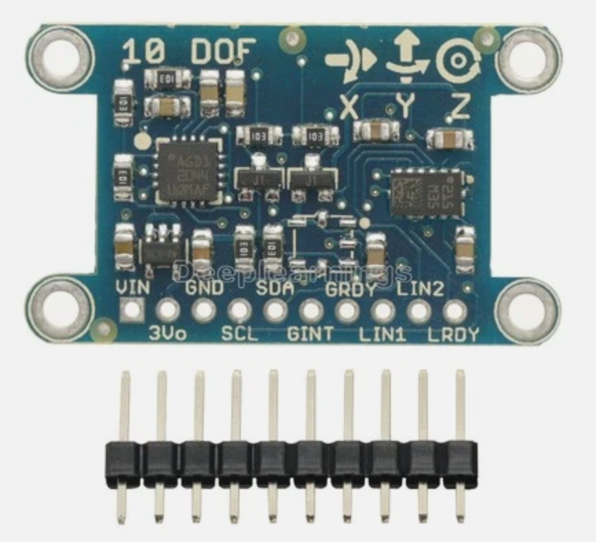
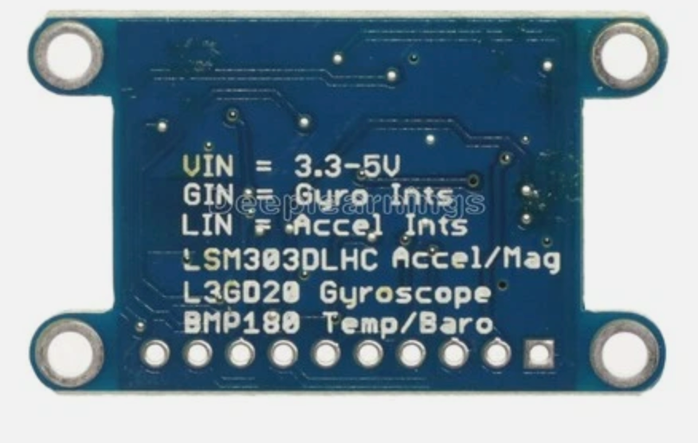

9-DOF IMU Kit
Can a robot feel which way it's turning, without a camera or a compass needle? This kit wires up a real 9-axis motion sensor to a bare Raspberry Pi Pico and proves, with live numbers on the screen, that it can.
Welcome, maker!
 In this lab, we wire up a real 9-axis motion sensor, confirm every chip
on it answers over I2C, and stream live gyroscope, accelerometer, and
magnetometer data to the console. Computational thinking is YOUR
superpower — let's activate it!
In this lab, we wire up a real 9-axis motion sensor, confirm every chip
on it answers over I2C, and stream live gyroscope, accelerometer, and
magnetometer data to the console. Computational thinking is YOUR
superpower — let's activate it!
Summary
In this lab, we bring up a 9-DOF IMU module on a breadboard with a bare Raspberry Pi Pico. We start by scanning the I2C bus to confirm all three sensor chips are wired correctly, then check each chip's identity to prove we're really talking to the parts we expect. Once identity is confirmed, we stream raw gyroscope, accelerometer, and magnetometer readings to the console and check that they look physically sane. Along the way, we hit — and fix — a real hardware bug, because that's what bringing up new hardware actually looks like.
Concepts Covered
This lab covers the following concepts from the learning graph:
- I2C Bus
- I2C Scanner Tool
- 9-DOF IMU Overview
- L3GD20 Gyroscope
- LSM303D Accelerometer Magnetometer
Prerequisites
This lab builds on concepts from:
- Chapter 6: Electronics, Motors, and Protocols — the I2C bus, addresses, and pull-up resistors
If you haven't tried a motion sensor before, the Compass Kit and IMU/MPU6050 Kit are gentler places to start.
Parts List
| Part | Price | Where to buy |
|---|---|---|
| Raspberry Pi Pico | (reused from earlier kits) | |
| Breadboard + jumper wires | (reused from earlier kits) | |
| "10 DOF" IMU module (L3GD20 + LSM303DLHC + BMP180) | {{TODO: price}} |
{{TODO: purchase link}} |
Total cost: {{TODO}} — fill in once you have the price/link for the sensor board handy.
Meet the 9-DOF IMU Module
IMU stands for Inertial Measurement Unit — a sensor that answers "what am I doing right now?" instead of "what's around me?" It can tell you whether something is spinning, tipping, or shaking, without a camera or any outside reference point.

The module's silkscreen prints "10 DOF" and marks the axis directions right on the board — use those arrows, not guesswork, when you decide which edge is "front."This board actually carries three separate sensor chips, not one:
| Chip | Senses | I2C address |
|---|---|---|
| L3GD20 | rotation rate (gyroscope) on 3 axes | 0x6B |
| LSM303DLHC | acceleration and magnetic field (accelerometer + magnetometer) on 3 axes each | 0x19 (accel), 0x1E (mag) |
| BMP180 | temperature and air pressure — a bonus chip, not used in this lab | 0x77 |
Three chips, three axes each, on the gyro and accelerometer, plus three more on the magnetometer, is where the name 9-DOF ("nine degrees of freedom") comes from. The board's own silkscreen calls it "10 DOF" because it's counting the bonus BMP180 too — we only use the first nine axes in this lab.

The back of the board spells out exactly what's on it — the fastest way to identify a sensor board is to just read the label.Why three chips instead of one?
 The MPU6050 in an earlier kit packs a gyroscope and accelerometer into a
single chip with one I2C address. This board's designer instead picked
two separate, ready-made chips — built by a company called
STMicroelectronics, which makes sensor chips for products all over the
world — and wired them to the same two bus wires. That's why this module
answers at three different I2C addresses instead of one — each chip
only knows about itself, and it's our code's job to talk to all three.
The MPU6050 in an earlier kit packs a gyroscope and accelerometer into a
single chip with one I2C address. This board's designer instead picked
two separate, ready-made chips — built by a company called
STMicroelectronics, which makes sensor chips for products all over the
world — and wired them to the same two bus wires. That's why this module
answers at three different I2C addresses instead of one — each chip
only knows about itself, and it's our code's job to talk to all three.
The board exposes ten pins. The important detail for wiring is that VIN
takes power in (anywhere from 3.3V to 5V, printed right on the back),
while 3Vo is a regulated 3.3V output from the board's own onboard
regulator — a convenience pin for powering something else, not a place to
feed power in. Leave 3Vo unconnected.
Wiring the Sensor
| Module pin | Pico pin | Notes |
|---|---|---|
| VIN | 3.3V OUT | Power in — not 3Vo |
| GND | GND | |
| SDA | GPIO0 | I2C data |
| SCL | GPIO1 | I2C clock |
| GINT | GPIO11 | Gyro interrupt — wired up, not read by these lessons yet |
| GRDY | GPIO12 | Gyro data-ready — wired up, not read by these lessons yet |
| LIN1 | GPIO13 | Accel/mag interrupt 1 — wired up, not read by these lessons yet |
| LIN2 | GPIO14 | Accel/mag interrupt 2 — wired up, not read by these lessons yet |
| LRDY | GPIO15 | Accel/mag data-ready — wired up, not read by these lessons yet |
| 3Vo | (not connected) | Regulated output, not a power input |
SDA is always an even pin, SCL is always the next odd one
 On the RP2040 chip inside the Pico, every I2C data pin lands on an
even-numbered GPIO and every I2C clock pin lands on the very next
odd-numbered one — GPIO0/1, GPIO4/5, GPIO8/9, GPIO20/21, and so on. If
you ever forget which GPIO is SDA and which is SCL, that pattern always
holds.
On the RP2040 chip inside the Pico, every I2C data pin lands on an
even-numbered GPIO and every I2C clock pin lands on the very next
odd-numbered one — GPIO0/1, GPIO4/5, GPIO8/9, GPIO20/21, and so on. If
you ever forget which GPIO is SDA and which is SCL, that pattern always
holds.
Here's a real bug we hit while building this lab, because hardware
debugging is part of engineering — not a sign something went wrong. A plain
I2C scan found all four chips right away — but reading an actual register
from any of them threw OSError: [Errno 5] EIO, every time, at every clock
speed. The fix wasn't a wiring change at all:
1 2 3 4 5 | |
A bus that scans but won't read isn't always a pull-up problem
 It's tempting to add external pull-up resistors the moment reads start
failing with
It's tempting to add external pull-up resistors the moment reads start
failing with EIO. Here's the proof that wasn't the real cause: if weak
pull-ups were the problem, SoftI2C should have failed too — it uses
the exact same physical resistors and the exact same clock speed. It
didn't fail even once. That means the bug lived in the RP2040's hardware
I2C0 peripheral driver on this board's firmware, not in the electrical
bus. When a scan works but reads don't, try machine.SoftI2C before
reaching for resistors.
Step 1 — 01-probe.py: Confirm Every Chip Answers on I2C
Before trusting any sensor reading, we need proof the right chips are
actually there. 01-probe.py scans the bus, then reads an identity value
back from each chip — because two different boards can share the same I2C
address by coincidence, and a scan alone can't tell them apart.
1 2 3 | |
The gyroscope has a proper WHO_AM_I register that always reports a fixed
value — 0xD4 for the L3GD20, 0xD7 for the closely related L3GD20H:
1 | |
The accelerometer half of the LSM303DLHC has no identity register at all — a real limitation of this chip, not a gap in our code. The closest thing to a check is writing a setting and reading it back:
1 2 | |
The magnetometer half makes up for it with three fixed identification bytes that spell out "H43":
1 | |
Try it now: run 01-probe.py in Thonny and press F5. You should see
all four devices found, followed by four identity confirmations and
TEST PASS - gyroscope, accelerometer, and magnetometer all found and
identified. If you want a quicker scan-only check while you're wiring
things up, i2c-scanner-test.py does just the scan, without the identity
checks.
Step 2 — 02-test-stream.py: Reading Raw Motion Data
With identity confirmed, we can trust the readings enough to stream them.
Two small driver classes — L3GD20 and LSM303DLHC — handle the register
math, so the lesson script itself stays simple:
1 2 3 4 5 6 | |
read_dps() returns rotation speed in degrees per second. read_accel_g()
returns acceleration in multiples of Earth's gravity (g). read_mag_gauss()
returns magnetic field strength in gauss — but it has to swap two of the
three bytes it reads first, because the LSM303DLHC's magnetometer registers
come out in X, Z, Y order, exactly the same surprising order the
HMC5883L used back in the Compass Kit:
1 2 3 4 | |
Here's a real sample from this bench, sitting still on a table:
1 | |
The accelerometer's total pull (about 0.90g here) should sit close to 1g at rest — ours is a little low because the board wasn't sitting perfectly level. The gyroscope reading a steady 92 dps while the board never moved looks alarming at first, but it isn't a bug: every cheap MEMS gyroscope — MEMS means the sensor is a tiny mechanical part, built at the same microscopic scale as the rest of the chip — has a fixed zero-rate bias, an offset baked in from the factory that shows up even sitting perfectly still. A future calibration lesson — the same technique used for the MPU6050's gyro bias in the IMU/MPU6050 Kit — is how you'd measure and subtract that bias out.
Try it now: run
upload-code.sh
from a terminal to copy config.py, both numbered lessons, and the shared
l3gd20.py/lsm303dlhc.py drivers onto the Pico in one step, then run
02-test-stream.py. Rotate the board and watch the gyro numbers swing; tilt
it and watch the accelerometer numbers shift.
Key Takeaways
- A "9-DOF" IMU module is often two or three separate I2C chips sharing one bus, not one combined chip — each with its own address and its own way of proving its identity.
- A scan finding a device only proves something answered at that address — reading a real identity value (WHO_AM_I, a register readback, or fixed ID bytes) is what proves it's the chip you think it is.
- On the RP2040, SDA is always an even-numbered GPIO and SCL is always the next odd one.
- A bus that scans fine but throws
EIOon every real read isn't automatically a pull-up problem — swapping the hardwaremachine.I2Cfor bit-bangedmachine.SoftI2Con the exact same pins and pull-ups is a fast way to tell the difference. - Every MEMS gyroscope and accelerometer has some amount of built-in error (zero-rate bias, a less-than-1g resting reading) that calibration, not perfect hardware, is what corrects.
You brought up a real 9-axis sensor from scratch!
 Look at what you just did: you confirmed three real chips over I2C,
tracked down a genuine peripheral-driver bug instead of reaching for a
fix that wouldn't have helped, and got nine real axes of motion data
streaming live. That's the exact kind of hardware bring-up work that
turns this module into the compass a future swarm of robots will use to
agree on which way they're all facing.
Look at what you just did: you confirmed three real chips over I2C,
tracked down a genuine peripheral-driver bug instead of reaching for a
fix that wouldn't have helped, and got nine real axes of motion data
streaming live. That's the exact kind of hardware bring-up work that
turns this module into the compass a future swarm of robots will use to
agree on which way they're all facing.
References
L3GD20 3-axis gyroscope — Datasheet - STMicroelectronics. Register map and electrical specifications for the gyroscope used in this lab.
LSM303DLHC accelerometer/magnetometer — Datasheet - STMicroelectronics. Register map, the X/Z/Y magnetometer data order, and the identification bytes used in this lab.
machine.I2C and machine.SoftI2C — MicroPython documentation - official reference for the hardware and bit-banged I2C drivers used in this lab.
Swarm Robot Build Plan - the L3GD20 + LSM303DLHC module bench-tested here is the same one planned for the swarm robot's WiFi heading-synchronization project.
Source code for this lab - 01-probe.py, 02-test-stream.py, i2c-scanner-test.py, config.py, and the shared l3gd20.py/lsm303dlhc.py drivers.